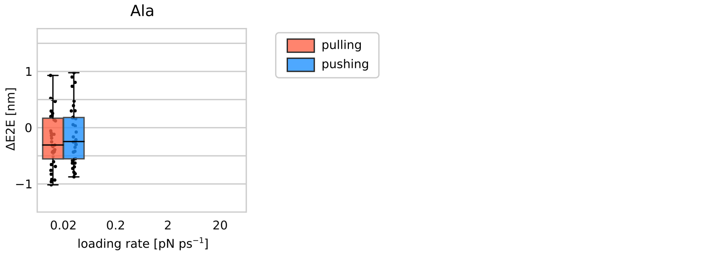
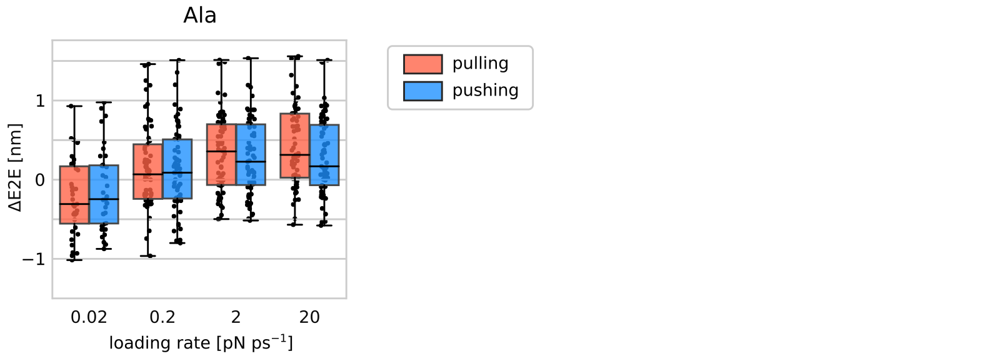
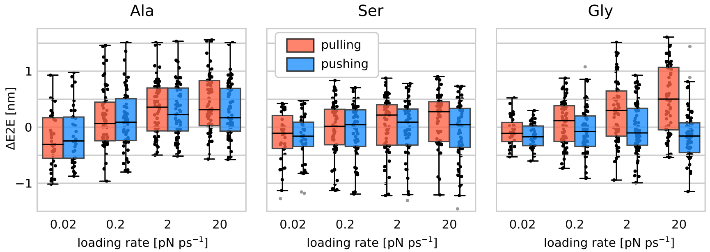

contributed talk given at 9th Users' Conference of IT4Innovations, Ostrava, Czechia
Created using Reveal.js.
Use the right arrow to start browsing the slides.
Warning
Some parts of this presentation may cause discomfort for those with trypophobia.

Translocation of short peptides through carbon nanotubes
Michal Kolář
Left: A short peptide inside a carbon nanotube.


tested parameters of the problem
direction
- pulling
- pushing
chemistry
- Ala
- Ser
- Gly
loading rate
- 0.02
- 0.2
- 2
- 20
(CNT diameter not tested, principal problem with the peptide flips.)
1
pulling × pushing
There is only little difference between pulling and pushing in the same direction.
Pulling moves the peptide slightly smoother than pushing.
The attachement point and the direction of force becomes important only when moving fast.
2
peptide chemistry
The peptide amino-acid sequence and the loading rate drive the peptide properties more than the choice of the force attachment point.


